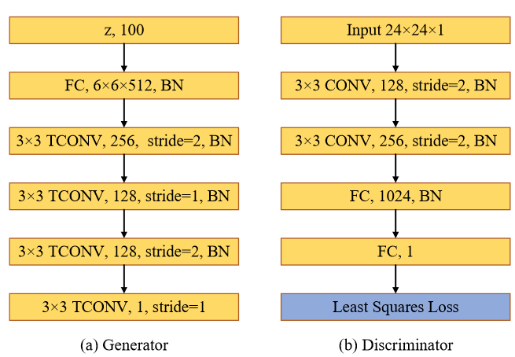

Paper 1 title:#
Deterministic and Probabilistic Wind Power Forecasts by Considering Various Atmospheric Models and Feature Engineering Approaches
Executive summary: The authors use three kind of numerical weather prediction (wind speed) rather than the single wind speed from the anemometer to serve as the feature engineering. The kernel of this paper is to use the specific data source to construct the feature and hence. What is useful for me is that we can consider the feature engineering in our work and cite this to alleviate the boring description. For reference, I think the following reference are of value:
- A New Fuzzy-Based Combined Prediction Interval for Wind Power Forecasting
Technical description:
PI coverage probability: show the percentage of the probability targets which will be covered by the upper and lower bound.
where \(N\) is the number of samples and \(c_t\) is a Boolean value that is evaluated as follows:
where \(y_t\) is the forecast target and \(U_t\) and \(L_t\) are upper and lower bounds of the interval, respectively.
PI normalized average width (PINAW): limit the high extra growth of the interval
where \(R\) is the range of the underlying targets used for normalizing PIs.
The LUBE method could be regarded as a constrained nonlinear optimization problem with conflicting objective as follows:
Objectives :
Maximize: \(\operatorname{PICP}(w)\) Minimize: PINAW \((w)\) Constraints :
PINAW \((w) \succ 0\)
This is resolved by the following method:
where \(n\) is the number of objectives (here \(n=2\) ), \(\mu_{f, i}\) is the membership function value of the \(i\) th objective, \(\Omega\) is the problem search space; \(X\) is the control vector including the \(\mathrm{NN}\) weighting factors, and \(\mu_{\mathrm{ref}, i}\) is the reference membership value for \(i\)-th objective.
Paper 2 Title:#
Privacy-preserving Spatiotemporal Scenario Generation of Renewable Energies: A Federated Deep Generative Learning Approach
Executive summary: The authors want to use the federated learning with a central server to generate the scenarios for the wind power. The authors use the federated learning and the least square generative adversarial networks (LSGANs) for renewable scenario generation. What I think is useful for me is the concept of scenario generation and the application of federated learning. There are some references that I think is interesting:
Technical description:
Generative adversarial networks: GAN contains discriminator and generator, the generator is used to generated samples and the discriminator is used to judge the input data whether historical data or the generated data as much as possible.
then the output of the discriminator network is
and the loss function of generated and discriminator are
where \(P_Z\) is a known distribution that is easy to sample. Then the mini-max game model with value function \(V_{\mathrm{GANs}}(G, D)\) is given by
Federated Learning: Suppose there are \(N\) clients, i.e. participating edge devices \(\left\{\mathcal{C}_1, \mathcal{C}_2, \ldots, \mathcal{C}_N\right\}\) based on their own dataset \(\left\{\mathcal{D}_1, \mathcal{D}_2, \ldots, \mathcal{D}_N\right\}\)
- traditional way: put all data together and train a big model
- Federated learning coordinates clients to train a global model \(\mathcal{M}_{\mathrm{FED}}\) deployed on a central server, not collecting all data.
\(\delta\)-accuracy loss: assuming that \(\mathcal{V}_{\text {SUM }}\) and \(\mathcal{V}_{\mathrm{FED}}\) are the performance metrics of the centralized model \(\mathcal{M}_{\text {SUM }}\) and federated model \(\mathcal{M}_{\text {FED }}\) , then \(\left|\mathcal{V}_{\mathrm{SUM}}-\mathcal{V}_{\mathrm{FED}}\right|<\delta\)
Global LSGANs Model:
- Traditionally, the generator is fixed, the optimal discriminator is as follows:
$$ D_{G, \mathrm{GANs}}^*(\boldsymbol{x})=\frac{P_d(\boldsymbol{x})}{P_d(\boldsymbol{x})+P_g(\boldsymbol{x})} $$
- New: Substitute the above equation into
$$ \begin{aligned} \min G \max _D V{\mathrm{GANs}}(G, D)= & \mathbb{E}{\boldsymbol{x} \sim P_d}[\log D(\boldsymbol{x})] \ & +\mathbb{E}{\boldsymbol{z} \sim P_z}[\log (1-D(G(\boldsymbol{z})))] \end{aligned} $$
then we could get
There are some drawbacks of the GAN, then least square-GAN are proposed. use \(a-b\) encoding and the least squares loss function, then the objective function of LSGAN is
The for the generator \(G\), the optimal discriminator \(D\) is
If we choose \(b-c=1\) and \(b-a=2\), then we could get
$$ 2 C_{\mathrm{LSGANs}}(G)=\chi_{\text {Pearson }}^2\left(P_d+P_g | 2 P_g\right) $$ where \(\chi_{\text {Pearson }}^2\) is the Pearson \(\chi^2\) divergence. If \(b-c=1\) and \(b-a=2\) are satisfied, (8) is equivalent to minimize the Pearson \(\chi^2\) divergence.

network configuration: activation function, ReLU and LeakyReLU activation functions
Then we consider the FederatedAveraging (FedAvg) algorithm. This algorithm is proposed in this paper: Communication-Efficient Learning of Deep Networks from Decentralized Data
The major difference between federated optimization and distribution optimization.
-
Non-IID: any particular user's local dataset will not be representative of the population distribution
-
Unbalanced: Some users will make much heavier use of the service
-
Massively distributed:
-
Limited communication, Mobile devices are frequently offline or on slow or expensive connection.
For a machine learning problem, we typically take
We assume that there are \(K\) clients and \(\mathcal{P}_k\) the set of indexes of data points on client \(k\), with \(n_k = \lvert \mathcal{P}_k \rvert\), then
three key parameters: \(C\), the fraction of clients that perform computation on each round; \(E\), then number of training passes each client makes over its local dataset on each round; and \(B\), the local minibatch size used for the client updates. We write \(B=\infty\) to indicate that the full data are used. $$ \begin{aligned} & \hline \text { Algorithm } 1 \text { FederatedAveraging. The } K \text { clients are } \ & \text { indexed by } k ; B \text { is the local minibatch size, } E \text { is the number } \ & \text { of local epochs, and } \eta \text { is the learning rate. } \ & \hline \text { Server executes: } \ & \text { initialize } w_0 \ & \text { for each round } t=1,2, \ldots \text { do } \ & \quad m \leftarrow \max (C \cdot K, 1) \ & \quad S_t \leftarrow(\operatorname{random} \text { set of } m \text { clients) } \ & \quad \text { for each client } k \in S_t \text { in parallel do } \ & \quad w_{t+1}^k \leftarrow \text { ClientUpdate }\left(k, w_t\right) \ & \quad w_{t+1} \leftarrow \sum_{k=1}^K \frac{n_k}{n} w_{t+1}^k \ & \text { ClientUpdate }(k, w): / / \text { Run on client } k \ & \mathcal{B} \leftarrow\left(\text { split } \mathcal{P}_k \text { into batches of size } B\right) \ & \text { for each local epoch } i \text { from } 1 \text { to } E \text { do } \ & \text { for batch } b \in \mathcal{B} \text { do } \ & \quad w \leftarrow w-\eta \nabla \ell(w ; b) \ & \text { return } w \text { to server } \end{aligned} $$
Then the algorithm could be (there is no contribution, except the GANs optimization part.)
\(\overline{\text { Algorithm } 1 \text { Federated Least Squares Generative Adversarial }}\) Networks (Fed-LSGAN) Require: Learning rate \(\alpha\); Adam hyperparameters \(\beta_1, \beta_2\); Local minibatch size \(m\); Global epoch \(W\); Synchronization interval \(K\), Client ratio \(E\). Require: A global LSGANs model with parameters \(\left(\theta_g^{\mathcal{S}}, \theta_d^{\mathcal{S}}\right)\) for Discriminator and Generator on central server \(\mathcal{S}\); local LSGANs models with parameters \(\left\{\theta_g, \theta_d\right\}_{i=1}^{N_r}\) on \(N_r\) clients \(\{\mathcal{C}\}_{i=1}^{N_r}\). 8: Update generator \(\theta_g^e\) of client \(e\) - Sample batch noise samples \(\{z\}_{i=1}^m \sim P_Z\). - Update parameters for generator network - $$ \left{\begin{array}{l} g_{\theta_g} \leftarrow \nabla_{\theta_g} \frac{1}{m} \sum_{i=1}^m \frac{1}{2}\left(D\left(G\left(z^{(i)}\right)\right)-1\right)^2 \ \theta_g \leftarrow \theta_g-\alpha \cdot \operatorname{Adam}\left(\theta_g, g_{\theta_g}, \beta_1, \beta_2\right) \end{array}\right. $$
11: end for 12: \(\quad\) if \(w \bmod K=0\) then 13: All selected clients send parameters to server, and the server aggregate \(\theta^{\mathcal{S}}\) by averaging
$$ \theta_g^S \leftarrow \frac{1}{N_e} \sum_{e=1}^{N_e} \theta_g^e, \quad \theta_d^{\mathcal{S}} \leftarrow \frac{1}{N_e} \sum_{e=1}^{N_e} \theta_d^e $$ 14: The server send back parameters and clients update local parameters
15: end if
Metric: Performance metric
Correlation Analysis:
where \(S\) is a random time series; \(\mu\) and \(\sigma\) denote the mean and variance of \(S\), respectively; and \(\tau\) is the time lag.
We use the continuous ranked probability score (CRPS) which measures the dissimilarity of the cumulative distributions between generated scenarios and historical observations.
The score at lead time \(\ell\) is defined as
where \(M\) is the total number of scenarios, \(\widehat{F}_{t+l \mid t}(\xi)\) denotes the cumulative distribution function of normalized scenario, and \(\mathbf{1}\left(\xi \geq \xi_{t+l}\right)\) is the indicator function for comparing scenarios and observation.
Fréchet inception Distance (FID) $$ \operatorname{FID}\left(P_d, P_g\right)=\left|\mu_d-\mu_g\right|+\operatorname{Tr}\left(\Sigma_d+\Sigma_g-2\left(\Sigma_d \Sigma_g\right)^{\frac{1}{2}}\right) $$ where \(\mu_d\) and \(\mu_g\) represent the empirical mean; \(\Sigma_d\) and \(\Sigma_g\) are empirical covariance.
Kernel Maximum Mean Discrepancy (MMD): measures the difference between \(P_d\) and \(P_g\) for some fixed kernel function \(k\), which is defined as $$ \operatorname{MMD}^2\left(P_d, P_g\right)=\underset{\substack{x, x^{\prime} \sim P_d \ y, y^{\prime} \sim P_g}}{ }\left[k\left(x, x^{\prime}\right)-2 k(x, y)+k\left(y, y^{\prime}\right)\right] $$ The 1-Nearest Neighbor classifier
Energy Score (ES) $$ \mathrm{ES}=\frac{1}{M} \sum_{i=1}^M\left|\varsigma-\xi_i\right|-\frac{1}{2 M^2} \sum_{i=1}^M \sum_{j=1}^M\left|\xi_i-\xi_j\right| $$ \(\varsigma\) is the real renewable power output, \(\xi_i\) is the \(i\)-th generated time series scenario and \(M\) denotes the number of scenarios.
Pearson correlation coefficient \(\rho\) of two time series \(S_i\) and \(S_j\) is $$ \rho\left(S_i, S_j\right)=\frac{\sum_{i=1}^n\left(S_i-\bar{S}i\right)\left(S_j-\bar{S}_j\right)}{\sqrt{\sum{i=1}^n\left(S_i-\bar{S}i\right)^2} \sqrt{\sum{i=1}^n\left(S_j-\bar{S}_j\right)^2}} $$